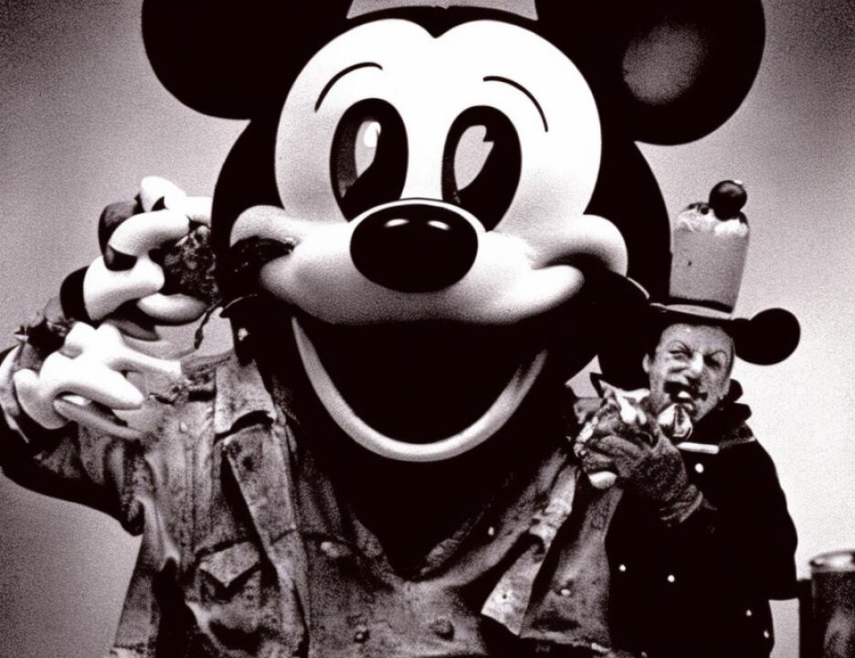

20 he identified the picture Government's Exhibit 1300 which was
21 15 Amani, the place where the passport photo and the passport
22 application with the fingerprints of Khalfan Khamis Mohamed
23 was found. What Mohamed Sultan told you was that the
24 transaction actually took place at the Al Noor Hotel in Dar es
25 Salaam, and in particular he identified the room, room 24
5419
1 within the Al Noor Hotel. Remember he said there was a
2 meeting and they were haggling back and forth about how much
3 money they had, and there was a knock on the door, and this
4 mysterious third person showed up with the rest of the money,
5 and just like the transaction involving the Nairobi bomb
6 truck, there was no paperwork. There was no contract.
7 Mohamed Sultan never got the rest of the paperwork. You may
8 remember Fabid Sadaalli was the hotel clerk, and one of the
9 things he identified was the guest register book, Government's
10 Exhibit 1457. If you look inside there, you see at the top
11 right, 24/7/98. You will see, if we can go ahead and
12 highlight that example, there is an entry for Sheik Ahmed, and
13 you see at the far right, room 24, just like Mr. Sultan
14 described for you. Fabid Sadaalli identified this photograph,
15 Government's Exhibit 123, as Sheik Ahmed, and he remembered
16 Sheik Ahmed getting visited by Ahmed Khalfan Galani. As I
17 mentioned earlier, there was Julius Kisingo, the welder who
18 did the work, and he identified the picture of Swedan as the
19 person who asked him to do the welding. If you look at
20 Exhibit 1178A on the screen, that is an overhead view of the
21 diagram of the back of the truck that Julius Kisingo described
22 for you. You remember how he took the frame and he described
23 the two sides that he built along the side of the wall. He
24 described the metal shack that we saw, Government's Exhibit
25 1366, that went along the side of the wall. What he said was,
5420
1 the person he identified as Swedan told him that he wanted
2 Kisingo to make these frames in the back for fish and that
3 Mr. Kisingo remembered seeing a spot where a refrigerator unit
4 of the truck had been but the unit was no longer there but he
5 could tell that it was once a refrigerator truck. The other
6 thing Julius Kisingo described for you was a large battery
7 frame that he was asked to make. That is Government's Exhibit
8 1178B.
9 One thing to bear in mind, if we can put up on the
10 left side Government's Exhibit 1178A and if we could rotate
11 it. During his interview with the FBI, Khalfan Khamis Mohamed
12 walks one of the FBI agents through a diagram as it was being
13 described by Khalfan Khamis as the back of the truck. Khalfan
14 Khamis Mohamed described the diagram on the right, 1054, as an
15 accurate diagram. If you compare it to the diagram of Julius
16 Kisingo, you can see, one of the things Julius Kisingo told
17 you about the holes in the back of the truck, they were marked
18 before he was asked to do any work and he drilled the holes
19 where he was told to do so. You will see that Khalfan Khamis
20 Mohamed agreed with the agents in that diagram that the
21 batteries that were used, no doubt the batteries used to
22 detonate the bomb, were in the back of the truck, and there
23 was wiring, which of course explained the holes in the back of
24 the truck, that had to go all the way up to the cab so the
25 suicide driver could detonate the bomb.
1